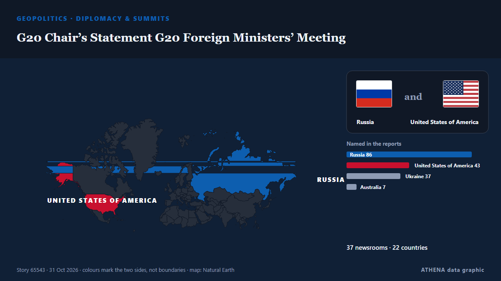

ATHENA Intelligence — Inteligencia informativa global — cada cifra explicada
Noticias del mundo, contrastadas entre países
ATHENA Intelligence sigue cientos de medios de todo el mundo y agrupa sus informaciones en acontecimientos. De cada uno ve cuántos medios de cuántos países lo publicaron, quién fue el primero y una puntuación de riesgo con sus motivos — actualizado cada 15 minutos, en siete idiomas.
En directo de las noticiasG20 Chair’s Statement G20 Foreign Ministers’ Meeting37 medios · 22 países · Riesgo 6.0 · Fuentes: Anadolu Agency (English), TASS (English)

GeopolíticaG20 Chair’s Statement G20 Foreign Ministers’ Meeting
Publicado por 37 medios de 22 países desde el 30 oct. Primero en informar: Anadolu Agency (English). ATHENA califica el riesgo en 6.0/10 (elevado), con un 91 % de confianza.
Los titulares se muestran en inglés, tal como se publicaron.
What Maria Corina Machado’s return to Venezuela means for its democratic transition
CARACAS, Oct 23 - The Venezuelan opposition movement headed by Nobel Peace Prize laureate Maria Corina Machado is preparing for eventual elections, including a new effort to boost voter registration… de The Straits Times
Evacuees from Russian-occupied Oleshky reunited with relatives in Ukraine
Russia and Ukraine have not specified how many people chose to leave the city. de The Irish News (Belfast)
Hoy en cifras
| 21:00 | 263 |
|---|---|
| 22:00 | 484 |
| 23:00 | 366 |
| 00:00 | 242 |
| 01:00 | 204 |
| 02:00 | 274 |
| 03:00 | 194 |
| 04:00 | 260 |
| 05:00 | 376 |
| 06:00 | 505 |
| 07:00 | 461 |
| 08:00 | 523 |
| 09:00 | 420 |
| 10:00 | 433 |
| 11:00 | 537 |
| 12:00 | 321 |
| 13:00 | 450 |
| 14:00 | 406 |
| 15:00 | 352 |
| 16:00 | 428 |
| 17:00 | 396 |
| 18:00 | 424 |
| 19:00 | 685 |
| 20:00 | 253 |
Riesgo de los eventos de hoy
Erdogan, Zelensky talk Black Sea Grain Corridor
Turkish President Recep Tayyip Erdogan and Ukrainian President Volodymyr Zelensky agreed on Saturday to continue work on the Black Sea Grain Corridor, aimed at enabling grain shipments from Ukraine. de AzerNews
North Korea fires around 10 ballistic missiles toward sea off east coast, Seoul says
North Korea launched approximately 10 short-range ballistic missiles into the sea off its east coast. de Arab News
US approves sale of 500 Patriot missiles to Ukraine
The American-made interceptors are the only effective weapon for downing Russia's ballistic missiles. de BBC News
Lo más cubierto
- Sociedad y derecho
High-speed train collision in Spain: 68 dead, more than 100 injured
55 países · 113 medios - Sociedad y derecho
Spain begins three days of mourning after train crash kills 69
40 países · 66 medios
Señales emergentes
- Aumento repentino · Activa ahoraConstitutional Tribunal
- Aumento repentino · Activa ahoraWorld Health Organization
- Aumento repentino · Activa ahoraManama Dialogue
- Aumento repentino · Activa ahoraManama
- Aumento repentino · Activa ahoraUS Secretary of State Marco Rubio
Alertas oficiales
- Red notification for tropical cyclone ARNAB-26. Population affected by Category 1 (120 km/h) wind speeds or higher is 3.049 million .Red · GDACS ·
- M 7.0 - Bonin Islands, Japan regionM7.0 · USGS ·
- M 7.0 - Bonin Islands, Japan regionM7.0 · USGS ·
- M 6.2 - 43 km ESE of Port-Olry, VanuatuM6.2 · USGS ·
- M 6.0 - 214 km NW of Port-Olry, VanuatuM6.0 · USGS ·
ATHENA en Telegram
Únase gratis al grupo ATHENA Intelligence y reciba las noticias en cuanto se publican aquí:
- eventos de última hora con riesgo de 6 o más
- un resumen cada hora de los principales eventos
- actualizaciones de los seguimientos de riesgo
- el informe diario cada mañana a las 10:00 (hora de Atenas)
- una perspectiva semanal
- avisos oficiales, señales emergentes y riesgos al alza
Pulse el botón, se abre Telegram, pulse Unirse. Las publicaciones están en inglés; puede silenciar o salir cuando quiera. ¿Sin Telegram? Es gratis en telegram.org.
Seguimiento de riesgos
Más ›Riesgos globales — semana 44, 2026 (26 oct – 1 nov) ›
Geopolítica, política y seguridad
Más ›Iran has no plans for direct meetings with US officials — foreign minister
The American side’s attempt to open the door to dialogue and understanding more broadly is a positive step, Abbas Araghchi said. de TASS (English)
- Guerras y conflictos
Iran's supreme leader warns US, Israel against new attacks
- Elecciones y política
Brazil's Lula to attend UN COP31 climate summit in Turkey
- Diplomacia y cumbres
Russian foreign minister Lavrov arrives in US for G20 meeting
- Guerras y conflictos
Trump says conflict with Iran will 'end very soon'
Economía, finanzas y mercados
Más ›Binance replenishes 90% of assets stolen in security incident
The exchange said it remained on track to resume withdrawal services on Sunday, November 1, within its previously stated timeframe. de The Jerusalem Post
- Cripto y activos digitales
Binance says it has covered 90% of losses from $6.3 billion hack so far
- Acciones, bonos y mercados
Trump lawsuit against Wall Street Journal over Epstein birthday letter rejected
- Cripto y activos digitales
Tech sell-off and Binance hack rattle investors
- Vivienda e inmobiliario
Liquidators agree sale of China Evergrande property management unit
Comercio, industria e infraestructuras
Más ›UN demands probe into death of its employee in Houthi custody
Over 70 UN personnel are being held by the Houthis. de The Straits Times
- Agricultura y alimentos
Rubio says US examining Türkiye's proposal on Black Sea grain shipments
- Aviación, tren y carretera
Tinubu arrives in Saudi Arabia for Umrah
- Transporte marítimo y puertos
Iran Guards Say Halted 3 Tankers After 'Incidents' In Strait Of Hormuz
- Comercio y acuerdos
Letter from China: The one-person company, the port and the shopping bag, snapshots from Hainan FTP
Energía, recursos y medio ambiente
Más ›Ghana opens talks with Russia to build its first nuclear power plant
By Nana Karikari, Senior Global Affairs Correspondent Ghana has opened preliminary talks with Russia’s state-owned nuclear corporation Rosatom to construct its first nuclear power station. de GBC Ghana Online
- Contaminación y biodiversidad
Iran ready to join three initiatives at COP17 on biodiversity conservation
- Clima extremo y desastres
Philippines raises alert level at Mayon volcano after eruption
- Clima extremo y desastres
Severe Weather to Hit Greece Through Monday
- Clima extremo y desastres
Storm Boelo to bring severe winds and rain across Ireland
Tecnología, IA y ciberseguridad
Más ›NASA telescope is on the verge of plunging back to Earth after failed rescue mission
CAPE CANAVERAL, Fla. (AP) — An aging NASA telescope is barely clinging to space after a failed rescue effort left it tottering lower and lower. de The Canadian Press (via CityNews)
Empresas, compañías e inversión
Más ›MacGregor secures retrofit contract for 35 Wallenius Wilhelmsen vessels
MacGregor has secured a contract to upgrade Programmable Logic Controller (PLC) systems aboard 35 Pure Car and Truck Carrier (PCTC) vessels operated by Wallenius Wilhelmsen. de Container News
- Estrategia empresarial
Waymo picks Toyota bZ4X as its next robotaxi, starting in Japan in 2027
- Quiebras y reestructuraciones
US to deport 150 Afghan immigrants back to Afghanistan: US media
- Estrategia empresarial
Environmental defenders testify about attacks in Latin America linked to Canadian mining companies
- Inversiones
CMA CGM, Nike and Gemadept officially launch electric barge in Vietnam
Salud, ciencia e investigación
Más ›Nigeria identifies 2 suspected Ebola cases in North-East says NCDC
The Nigeria Centre for Disease Control and Prevention, however, says that confirmation is subject to laboratory results. de Channels TV
- Investigación médica
23:28 How Belarus hosted Oleshky evacuees: the humanitarian mission in detail Society
- Brotes y salud pública
Congo's Ebola deaths top 5,000 as fear of continent-wide spread mounts
- Investigación médica
Asanko Gold organises health screening for residents in host communities
- Avances
Australia hammered by Harmer in Cape Town as South Africa take series 2-1
Sociedad, derecho y políticas públicas
Más ›London police arrest 139 people outside US Embassy for supporting banned pro-Palestinian group
London police said they arrested 139 people at a protest outside the U.S. de The Canadian Press (via CityNews)
- Protestas y opinión pública
Clashes break out as hundreds of thousands protest in France
- Accidentes y emergencias
One killed, 6 wounded in US Halloween store shooting
- Protestas y opinión pública
France heads into third weekend of protests as youth-led rallies sweep Europe
- Accidentes y emergencias
Hong Kong has released the full report on Tai Po fire tragedy. Here’s all you need to know
Deportes
Más ›Max Verstappen slams Liam Lawson for FP2 clash at F1 Mexico GP
Max Verstappen has criticised Liam Lawson following their clash in second practice for the Mexico Grand Prix, claiming it wasn’t “very smart” given the New Zealander is fighting for his Formula 1… de Motorsport.com
- Fútbol
Aston Villa vs Jamie Carragher - 'Unacceptable insults', legal action and an apology
- Fútbol
Man City beaten by Brighton as Yasin Ayari makes amends for midweek penalty miss
- Fútbol
Pressure piles on Man United’s Carrick after 2-0 defeat at Chelsea
- Juegos Olímpicos y más
Canelo Alvarez-Christian Mbilli live updates, results and analysis
Cultura, personas y estilo de vida
Más ›Strictly Come Dancing viewers left 'disappointed' moments into Halloween special
The opening to the BBC dancing competition's annual Halloween special divided viewers. de Manchester Evening News
- Cine y televisión
Cartoon by Amjad Rasmi. (Courtesy of Asharq Al-Awsat)
- Música
Macklemore says he was unable to ‘stay silent’ about Israel-Palestine conflict
- Música
Expect Gusts Up to 85 km/h and Rain in Costa Rica This Weekend
- Arte, libros y patrimonio
The Dachshund Is the Muse in an Exhibition Showcasing the Sausage Dog’s History in Art